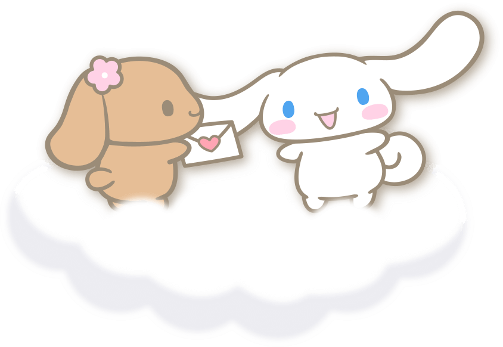

A VERY FLUFFY LITTLE DETOUR ♡
Cinna’s sticker world
Untuk Lily, karena satu Cinnamoroll nggak akan pernah cukup. Tap semua stiker buat lihat lebih dekat!

ONE MORE LITTLE SURPRISEA pocket full of happy clouds!
For Lily, with love & an unreasonable amount of Cinnamoroll. ♡